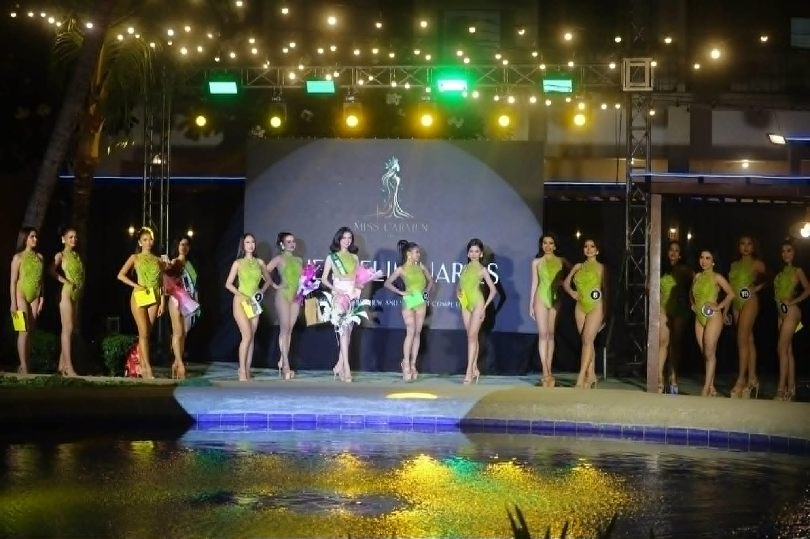
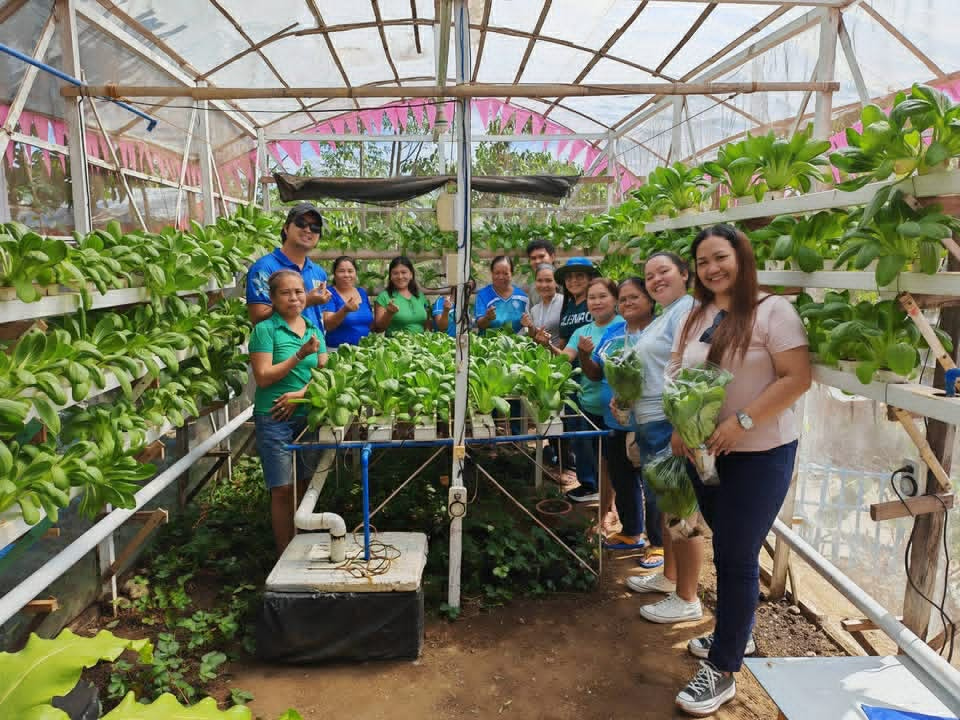
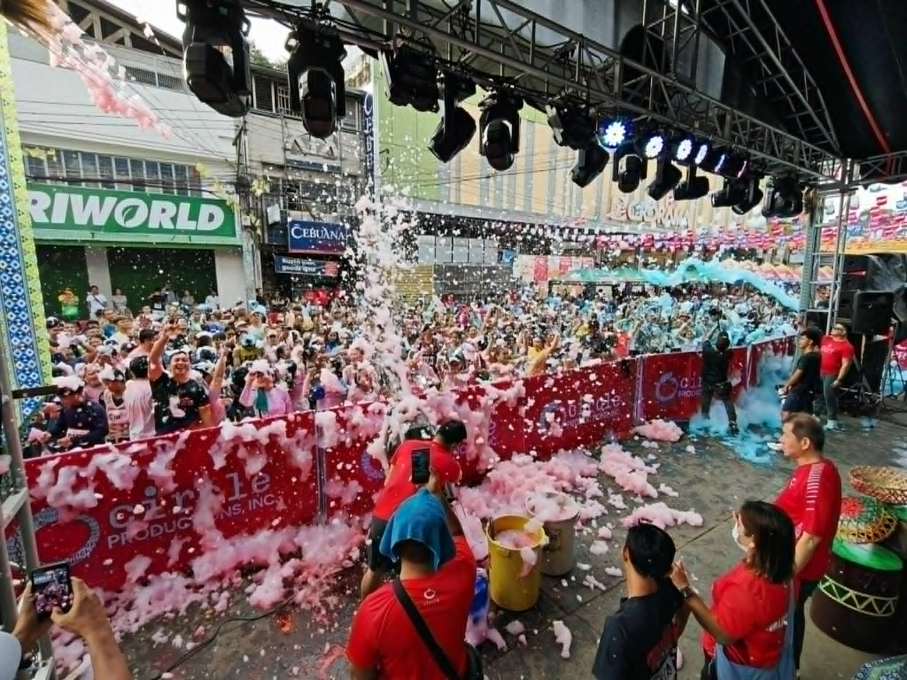
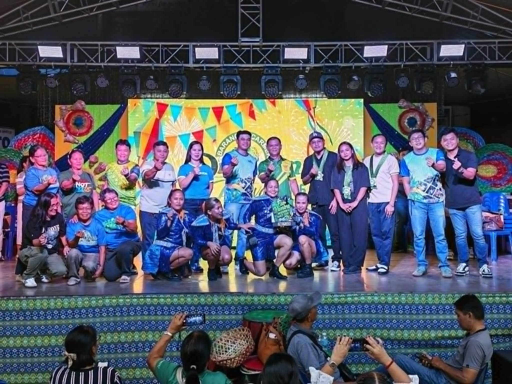

𝗠𝗶𝘀𝘀 𝗖𝗮𝗿𝗺𝗲𝗻 𝟮𝟬𝟮𝟲
𝗣𝗿𝗲𝗹𝗶𝗺𝗶𝗻𝗮𝗿𝘆 𝗔𝗰𝘁𝗶𝘃𝗶𝘁𝗶𝗲𝘀: 𝗖𝗹𝗼𝘀𝗲𝗱 𝗗𝗼𝗼𝗿 𝗜𝗻𝘁𝗲𝗿𝘃𝗶𝗲𝘄 & 𝗦𝘄𝗶𝗺𝘀𝘂𝗶𝘁 𝗖𝗼𝗺𝗽𝗲𝘁𝗶𝘁𝗶𝗼𝗻 @𝗖𝗼𝘂𝗻𝘁𝗿𝘆 𝗩𝗶𝗹𝗹𝗮𝗴𝗲 𝗛𝗼𝘁𝗲𝗹 | 𝗝𝘂𝗹𝘆 𝟵, 𝟮𝟬𝟮𝟲 MABUHAY CARMENANON 💙 Dako kaayong kalamposan ang 𝗠𝗶𝘀𝘀 𝗖𝗮𝗿𝗺𝗲𝗻 𝟮𝟬𝟮𝟲 𝗣𝗿𝗲𝗹𝗶𝗺𝗶𝗻𝗮𝗿𝘆 𝗖𝗹𝗼𝘀𝗲𝗱 𝗗𝗼𝗼𝗿 𝗜𝗻𝘁𝗲𝗿𝘃𝗶𝗲𝘄 𝗮𝗻𝗱 𝗦𝘄𝗶𝗺𝘀𝘂𝗶𝘁 𝗖𝗼𝗺𝗽𝗲𝘁𝗶𝘁𝗶𝗼𝗻
Barangay Carmen
Explore a collection of photos showcasing the activities, programs, celebrations, and community events of Barangay Carmen. These images highlight the barangay's commitment to public service, cultural traditions, and community development while preserving memorable moments shared by its residents.

𝗣𝗿𝗲𝗹𝗶𝗺𝗶𝗻𝗮𝗿𝘆 𝗔𝗰𝘁𝗶𝘃𝗶𝘁𝗶𝗲𝘀: 𝗖𝗹𝗼𝘀𝗲𝗱 𝗗𝗼𝗼𝗿 𝗜𝗻𝘁𝗲𝗿𝘃𝗶𝗲𝘄 & 𝗦𝘄𝗶𝗺𝘀𝘂𝗶𝘁 𝗖𝗼𝗺𝗽𝗲𝘁𝗶𝘁𝗶𝗼𝗻 @𝗖𝗼𝘂𝗻𝘁𝗿𝘆 𝗩𝗶𝗹𝗹𝗮𝗴𝗲 𝗛𝗼𝘁𝗲𝗹 | 𝗝𝘂𝗹𝘆 𝟵, 𝟮𝟬𝟮𝟲 MABUHAY CARMENANON 💙 Dako kaayong kalamposan ang 𝗠𝗶𝘀𝘀 𝗖𝗮𝗿𝗺𝗲𝗻 𝟮𝟬𝟮𝟲 𝗣𝗿𝗲𝗹𝗶𝗺𝗶𝗻𝗮𝗿𝘆 𝗖𝗹𝗼𝘀𝗲𝗱 𝗗𝗼𝗼𝗿 𝗜𝗻𝘁𝗲𝗿𝘃𝗶𝗲𝘄 𝗮𝗻𝗱 𝗦𝘄𝗶𝗺𝘀𝘂𝗶𝘁 𝗖𝗼𝗺𝗽𝗲𝘁𝗶𝘁𝗶𝗼𝗻

𝗖𝗼𝗺𝗽𝗲𝘁𝗶𝘁𝗶𝗼𝗻 𝟮𝟬𝟮𝟲 𝗠𝗶𝗰𝗿𝗼 & 𝗠𝗮𝗰𝗿𝗼 𝗖𝗮𝘁𝗲𝗴𝗼𝗿𝘆 𝗪𝗶𝗻𝗻𝗲𝗿𝘀 🌱🏆 Ania ang atong mga Eco Warriors Urban Gardens! Tan-awon ta ang bunga sa grabeng paningkamot, singot, ug gugma sa atong mga Eco Warriors sa pag-atiman sa ilang mga pananom.

Grabe ka malampuson ug puno sa lingaw ang atong Color Fun Run and Rave Party kaganiha buntag sa Carmen Market. Daghang salamat sa tanang nipartisipar ug nipaambit sa ilang kusog nga enerhiya gikan sa dagan hangtod sa sayaw. Kamo ang naghimo niining gabhiona nga mabulokon ug dili malimtan.

Cagayan de Oro's history dates back to around 350 AD as shown by archaeological discoveries in Huluga. During the Spanish era, it became an important religious, political, and trading center in Northern Mindanao.